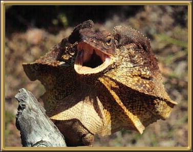

These lizards are completely harrmless, but they look
quite fearsome when threatened! They open the ruff of skin around their necks
to create the frill, after which they were named, and open their mouths as wide as
possible. They will, at times, run upright on their hind legs.
Photographer: Unknown